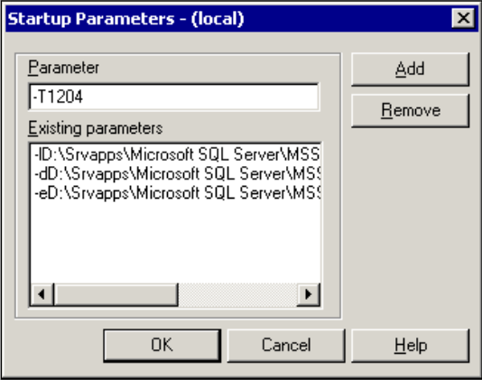
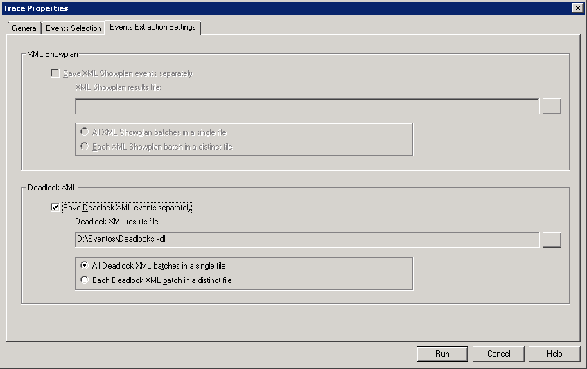
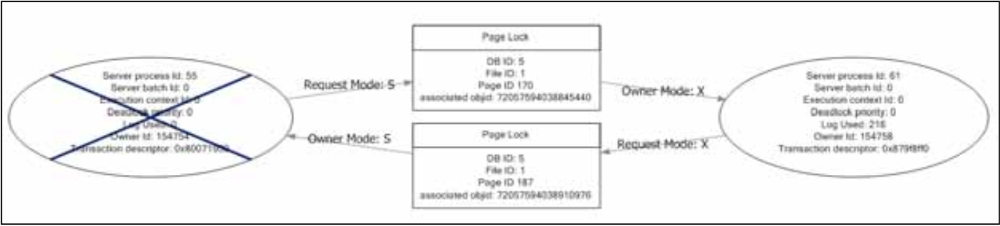
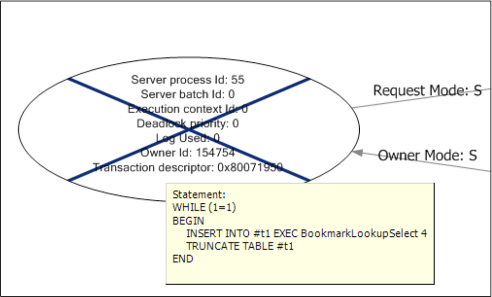
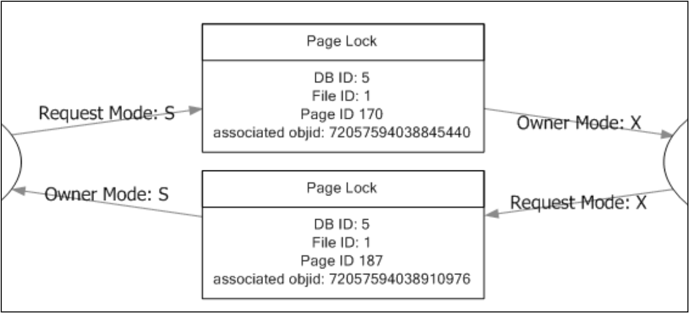

Capítulo 7: Lidando com Deadlocks
Um deadlock é definido no dicionário como "uma paralisação resultante da ação de forças iguais e opostas", e isso acaba sendo uma descrição razoável de um deadlock no SQL Server: duas ou mais sessões dentro do mecanismo do banco de dados acabam aguardando acesso a recursos bloqueados mantidos um pelo outro. Em uma situação de deadlock, nenhuma das sessões pode continuar a executar até que uma dessas sessões libere seus bloqueios, permitindo assim que a(s) outra(s) sessão(ões) acesse(m) o recurso bloqueado. Múltiplos processos bloqueando persistentemente uns aos outros, em um estado insolúvel, eventualmente resultarão em uma interrupção no processamento dentro do mecanismo do banco de dados.
Um equívoco comum é que os DBAs precisam intervir para "matar" um dos processos envolvidos em um deadlock. Na verdade, o SQL Server é projetado para detectar e resolver deadlocks automaticamente, por meio do uso do Lock Monitor, um processo em segundo plano que é iniciado quando a instância do SQL Server é iniciada e que monitora constantemente o sistema em busca de sessões em deadlock. No entanto, quando os deadlocks são relatados, o DBA deve investigar sua causa imediatamente. Muitos dos mesmos problemas que causam bloqueios graves no banco de dados, como design de banco de dados inadequado, falta de indexação, consultas mal projetadas, nível de isolamento inadequado e assim por diante (todos discutidos no Capítulo 6), também são causas comuns de deadlocks. Este capítulo fornecerá as ferramentas, técnicas e ajustes necessários para diagnosticar e prevenir deadlocks, e garantir que eles sejam tratados com elegância, caso ocorram. Especificamente, ele abordará:
- como capturar gráficos de deadlock usando uma variedade de técnicas, incluindo Flags de Rastreamento, o evento de gráfico de deadlock do Profiler e notificações de eventos do service broker
- como ler gráficos de deadlock para localizar as sessões, consultas e recursos envolvidos
- tipos comuns de deadlock e como evitá-los
- usando tratamento de erro
TRY...CATCHno servidor ou no cliente para deadlocks, para evitar errosUnhandledExceptionna aplicação.
Lock Monitor
Quando o Monitor de Bloqueio realiza uma busca por deadlock e detecta que uma ou mais sessões estão envolvidas em um deadlock, uma das sessões é selecionada como vítima do deadlock e sua transação atual é revertida. Quando isso ocorre, todos os bloqueios mantidos pela sessão da vítima são liberados, permitindo que qualquer outra sessão previamente bloqueada continue processando. Uma vez que a reversão é concluída, a sessão da vítima é terminada, retornando uma mensagem de erro 1205 para o cliente de origem.
O SQL Server seleciona a vítima do deadlock com base nos seguintes critérios:
- Prioridade de deadlock – a DEADLOCK_PRIORITY atribuída a uma determinada sessão determina a importância relativa de completar suas transações, caso essa sessão esteja envolvida em um deadlock. A sessão com a menor prioridade será sempre escolhida como a vítima do deadlock. A prioridade de deadlock é abordada em mais detalhes mais adiante neste capítulo.
- Custo de reversão – se duas ou mais sessões envolvidas em um deadlock tiverem a mesma prioridade de deadlock, o SQL Server escolherá como vítima do deadlock a sessão que tiver o menor custo estimado de reversão.
Capturando Gráficos de Deadlock
Quando erros 1205 são relatados, é importante que o DBA descubra por que o deadlock aconteceu e tome medidas para evitar sua recorrência. O primeiro passo para solucionar e resolver um problema de deadlock é capturar as informações do gráfico de deadlock.
Um gráfico de deadlock é uma saída de informações sobre as sessões e recursos que estiveram envolvidos em um deadlock. Os meios pelos quais você pode capturar um gráfico de deadlock se diversificaram e melhoraram nas versões mais recentes do SQL Server. Se você ainda está usando o SQL Server 2000, então está limitado a um único, e um tanto limitado, Trace Flag (1204). O SQL Server 2005 adicionou um novo Trace Flag (1222), forneceu o evento Gráfico de Deadlock em XML no SQL Server Profiler e permitiu a captura de gráficos de deadlock via notificações de eventos do Service Broker e do Provedor WMI (Instrumentação de Gerenciamento do Windows) para Eventos do Servidor. Em cada caso, o gráfico de deadlock contém significativamente mais informações sobre a natureza do deadlock do que está disponível através do Trace Flag 1204. Isso minimiza a necessidade de reunir, manualmente, informações adicionais do SQL Server para entender por que o deadlock ocorreu; por exemplo, resolver o pageid dos bloqueios sendo mantidos para o objectid e indexid, usando DBCC PAGE, e usar SQL Trace para percorrer a cadeia de deadlock e descobrir quais declarações em execução estão causando o problema. O SQL Server 2008 fornece todas essas facilidades, além da sessão de Eventos Estendidos system_health.
Para permitir que você trabalhe em cada seção e gere os mesmos gráficos de deadlock que são apresentados e descritos no texto, os materiais de recursos deste livro (http://www.simple-talk.com/RedGateBooks/JonathanKehayias/TroubleshootingSQLServer_Code.zip) incluem código de exemplo para gerar um deadlock no SQL Server.
Trace Flag 1204
Os Trace Flags no SQL Server permitem "caminhos de código" alternativos em pontos chave dentro do motor de banco de dados, permitindo que código adicional seja executado quando necessário. Se você estiver enfrentando falhas em consultas com erros de deadlock em uma instância do SQL Server, os Trace Flags podem ser ativados para uma única sessão ou para todas as sessões naquela instância. Quando o Trace Flag 1204 está habilitado para todas as sessões em uma instância do SQL Server, qualquer deadlock detectado pelo monitor de deadlock resultará na escrita de um gráfico de deadlock no log de erros do SQL Server.
No SQL Server 2000, este Trace Flag é o único meio de capturar um gráfico de deadlock, o que torna a solução de problemas de deadlocking no SQL Server 2000 bastante desafiadora, embora ainda possível. Nas versões mais recentes do SQL Server, este Trace Flag ainda está disponível, embora tenha sido substituído pelo Trace Flag 1222.
O Trace Flag 1204, assim como todos os Trace Flags, pode ser ativado e desativado de forma ad hoc usando os comandos DBCC TRACEON e DBCC TRACEOFF no console do banco de dados. A Listagem 7.1 mostra como habilitar o Trace Flag 1204 a curto prazo no nível do servidor (especificado pelo argumento -1), de modo que todas as declarações subsequentes sejam executadas com este Trace Flag habilitado.
DBCC TRACEON(1204, -1)
Listagem 7.1: Habilitando o Trace Flag 1204 para todas as sessões.
Alternativamente, os Trace Flags podem ser ativados automaticamente, utilizando o parâmetro de inicialização –T. Para adicionar um parâmetro de inicialização ao SQL Server, clique com o botão direito do mouse no nó do servidor no Enterprise Manager e abra a página de Propriedades do Servidor. Na aba Geral, clique no botão Parâmetros de Inicialização e, em seguida, adicione o parâmetro de inicialização ao servidor, conforme mostrado na Figura 7.1.
Figura 7.1: Utilizando o parâmetro de inicialização –T.
Nos casos em que é possível reiniciar uma instância, utilizar um parâmetro de inicialização pode ser útil quando se deseja capturar todos os deadlocks que ocorrem no servidor, ao longo de um longo período. No entanto, uma vez que a resolução de problemas de deadlock tenha sido concluída, o Trace Flag deve ser removido dos parâmetros de inicialização. Como o Trace Flag permite que a instância grave o gráfico de deadlock no log de erros do SQL Server, a única maneira de recuperar o gráfico é ler o arquivo de log de erros e, em seguida, extrair os eventos do arquivo de log para análise.
Trace Flag 1222
O SQL Server 2005 adicionou o Trace Flag 1222 para capturar os gráficos de deadlock em um formato mais fácil de ler e mais abrangente do que o disponível com o flag 1204. Ele captura e apresenta as informações de uma maneira que torna muito mais fácil identificar a vítima do deadlock, assim como os recursos e processos envolvidos no deadlock (abordados em detalhes na seção Leitura de Gráficos de Deadlock).
O Trace Flag 1204 ainda está disponível, por motivos de compatibilidade retroativa, mas ao usar Trace Flags para capturar gráficos de deadlock no SQL Server 2005 ou posterior, você deve sempre usar o Trace Flag 1222 em preferência ao Trace Flag 1204. O Trace Flag 1222 é habilitado da mesma maneira que o 1204, utilizando DBCC TRACEON(), como mostrado no Listagem 7.1 ou o parâmetro de inicialização –T, como mostrado na Figura 7.1.
Evento de Gráfico de Deadlock XML no SQL Profiler
Novo no SQL Server 2005, o evento Deadlock Graph no SQL Trace captura as informações do gráfico de deadlock, sem escrevê-las no Log de Erros do SQL Server. O evento Deadlock Graph faz parte da categoria de eventos Locks e pode ser adicionado a um rastreamento do SQL Server Profiler selecionando o evento na caixa de diálogo Propriedades de Rastreamento do Profiler, como mostrado na Figura 7.2.
Figura 7.2: Selecionando o evento Deadlock Graph na caixa de diálogo Propriedades de Rastreamento.
SQL Profiler can be configured to save the deadlock graphs separately, into XDL files, as shown in Figure 7.3.
Figura 7.3: Salvando gráficos de deadlock.
Um arquivo XDL é um arquivo XML padrão. O Management Studio reconhece a extensão do arquivo ao abri-lo e exibe as informações de deadlock graficamente, em vez de como XML.
Se você preferir trabalhar diretamente com traces no servidor, eliminando a sobrecarga do cliente Profiler, pode capturar as informações do gráfico de deadlock diretamente dos seus scripts, utilizando o conjunto de procedimentos armazenados do sistema SP_TRACE_*. Os gráficos capturados serão gravados em um arquivo de rastreamento SQL no SQL Server. A maneira mais fácil de gerar um script para um trace no servidor é primeiro criar o trace no SQL Profiler e, em seguida, exportá-lo para um script usando Arquivo | Exportar | Exportar Definição de Trace, conforme descrito em detalhes no Capítulo 5.
Um arquivo de trace no servidor pode ser lido usando a função de sistema fn_trace_gettable ou abrindo-o no SQL Profiler. Ao usar o SQL Profiler para visualizar o conteúdo do arquivo de trace, os eventos de deadlock podem ser exportados para arquivos XDL individuais, que podem ser abertos graficamente usando o SQL Server Management Studio, através do menu Arquivo | Exportar | Extrair Eventos do SQL Server | Extrair Eventos de Deadlock.
Notificações de eventos do Service Broker
Também novo no SQL Server 2005, as notificações de eventos permitem capturar informações de gráficos de deadlock usando o SQL Server Service Broker, criando um serviço e uma fila para o evento de rastreamento DEADLOCK_GRAPH. As informações contidas no gráfico de deadlock capturado por notificações de eventos não diferem das informações contidas no gráfico de deadlock capturado pelo SQL Trace; a única diferença é o mecanismo de captura.
Configurar uma notificação de evento para capturar informações de gráficos de deadlock requer três objetos do Service Broker:
- Uma
FILApara armazenar as mensagens do eventoDEADLOCK_GRAPH - Um
SERVIÇOpara encaminhar as mensagens para a fila - Uma
NOTIFICAÇÃO DE EVENTOpara capturar o gráfico de deadlock e empacotá-lo em uma mensagem que é enviada para o Serviço.
A Listagem 7.2 mostra como criar esses objetos usando T-SQL. Observe que é necessário criar os objetos em um banco de dados com suporte ao broker, como o msdb. O banco de dados master não tem o broker habilitado por padrão.
USE msdb;
-- Create a service broker queue to hold the events
CREATE QUEUE DeadlockQueue
GO
-- Create a service broker service receive the events
CREATE SERVICE DeadlockService
ON QUEUE DeadlockQueue ([http://schemas.microsoft.com/SQL/Notifications/
PostEventNotification])
GO
-- Create the event notification for deadlock graphs on the service
CREATE EVENT NOTIFICATION CaptureDeadlocks
ON SERVER
WITH FAN_IN
FOR DEADLOCK_GRAPH
TO SERVICE 'DeadlockService' , 'current database' ;
GO
Listagem 7.2: Criando os objetos de serviço, fila e notificação de evento do Service Broker.
Com os objetos criados, os gráficos de deadlock serão coletados na fila à medida que os deadlocks ocorrerem no servidor. Embora a fila possa ser consultada usando uma instrução SELECT, como se fosse uma tabela, o conteúdo permanece na fila até que seja processado usando o comando RECEIVE, conforme demonstrado na Listagem 7.3.
USE msdb ;
-- Cast message_body to XML and query deadlock graph from TextData
SELECT message_body.valuequery('(/EVENT_INSTANCE/TextData/
deadlock-list)[1]', 'varchar(128)' )
AS DeadlockGraph
FROM ( SELECT CAST(message_body AS XML ) AS message_body
FROM DeadlockQueue
) AS sub ;
GO
-- Receive the next available message FROM the queue
DECLARE @message_body XML ;
RECEIVE TOP (1) -- just handle one message at a time
@message_body=message_body
FROM DeadlockQueue ;
-- Query deadlock graph from TextData
SELECT @message_body.valuequery('(/EVENT_INSTANCE/TextData/
deadlock-list)[1]','varchar(128)' )
AS DeadlockGraph
GO
Listing 7.3: Query and processing DEADLOCK_GRAPH event messages in the queue.
Como as Notificações de Eventos utilizam uma fila do service broker para processamento, ações adicionais podem ser realizadas quando o evento de deadlock é disparado. Quando ocorre um evento de deadlock, o Service Broker pode "ativar" uma procedure armazenada que processa a mensagem e responde adequadamente, por exemplo, enviando uma notificação por email usando Database Mail, registrando o evento em uma tabela ou coletando informações adicionais, como os planos de execução de ambas as instruções, a partir do SQL Server, com base nas informações contidas dentro do gráfico de deadlock. A cobertura completa desse tópico está além do escopo deste capítulo. No entanto, um exemplo completo de como usar a ativação de fila para automatizar completamente a coleta de deadlocks pode ser encontrado no arquivo de download do código deste livro.
Provedor WMI para eventos de servidor
Também novo no SQL Server 2005, o Provedor WMI para Eventos de Servidor permite que o WMI seja usado para monitorar eventos do SQL Server à medida que ocorrem. Qualquer evento que possa ser capturado através de notificações de eventos tem um Objeto de Evento WMI correspondente, e qualquer aplicativo de gerenciamento WMI pode se inscrever nesses objetos de evento.
O SQL Server Agent foi atualizado para gerenciar eventos WMI, através do uso da WMI Query Language (WQL), uma linguagem de consulta semelhante ao T-SQL que é usada com WMI e Alertas do Agent para eventos WMI.
Um exemplo completo de como criar um alerta do SQL Agent para capturar e armazenar gráficos de deadlock está fora do escopo deste capítulo e pode ser encontrado no exemplo do Books Online, Criando um Alerta do SQL Server Agent Usando o Provedor WMI para Eventos de Servidor (http://msdn.microsoft.com/en-us/library/ms186385.aspx). No entanto, essencialmente, isso envolve a criação, via o Provedor de Eventos WMI, de um alerta do SQL Agent para monitorar eventos de gráfico de deadlock. O alerta consulta eventos usando WQL e, quando recebe a notificação de que um ocorreu, dispara um job que captura o gráfico de deadlock em uma tabela designada do SQL Server.
Para capturar gráficos de deadlock usando o Provedor de Eventos WMI e um alerta do SQL Agent dessa maneira, é necessário que a opção "Substituir tokens para todas as respostas de jobs a alertas" nas propriedades do Sistema de Alertas do SQL Server Agent esteja habilitada. Também é necessário que o Service Broker (que processa as mensagens de notificação) esteja habilitado no msdb, bem como no banco de dados em que os gráficos de deadlock são armazenados.
WMI event provider bug
It is worth noting that there is a known bug in the WMI Event Provider for server names that exceed fourteen characters; this was fixed in Cumulative Update 5 for SQL Server 2005 Service Pack 2.
Eventos Estendidos
Antes do SQL Server 2008, não havia como encontrar informações sobre deadlocks retroativamente. Obter gráficos de deadlock exigia que um SQL Trace estivesse ativamente em execução, ou que as Trace Flags 1222 ou 1205 estivessem ativadas para a instância. Como rastrear deadlocks por qualquer um desses métodos pode ser intensivo em recursos, isso geralmente significava que uma série de deadlocks precisava ocorrer para motivar o início de um trace ou a ativação das Trace Flags.
O SQL Server 2008 inclui todas as técnicas discutidas anteriormente para capturar gráficos de deadlock e adiciona uma nova, que é a coleta de informações de deadlock através da sessão de eventos padrão system_health em Eventos Estendidos. Esta sessão de eventos padrão (semelhante, em conceito, ao trace padrão) é executada por padrão em todas as instalações do SQL Server 2008 e coleta uma gama de informações úteis para solução de problemas de erros que ocorrem no SQL Server, incluindo deadlocks. Os gráficos de deadlock capturados por Eventos Estendidos no SQL Server 2008 têm a capacidade única de conter informações sobre deadlocks com múltiplas vítimas (deadlocks onde mais de uma sessão foi finalizada pelo Lock Monitor para resolver o conflito).
Mais sobre Eventos Estendidos
Não podemos cobrir Eventos Estendidos em detalhes neste livro, mas, para uma boa visão geral do tópico, leia o artigo de Paul Randal, "SQL 2008: Advanced Troubleshooting with Extended Events".(http://technet.microsoft.com/en-us/magazine/2009.01.sql2008.aspx).
A sessão system_health usa um alvo ring_buffer, que armazena as informações coletadas pelos eventos disparados na memória como um documento XML na DMV sys.dm_xe_session_targets. Esta DMV pode ser juntada à DMV sys.dm_xe_sessions para obter as informações da sessão juntamente com os dados armazenados no alvo ring_buffer, conforme mostrado na Listagem 7.4.
SELECT CAST (target_data AS XML ) AS TargetData
FROM sys.dm_xe_session_targets st
JOIN sys.dm_xe_sessions s ON s.address = st.event_session_address
WHERE name = 'system_health'
Listagem 7.4: Recuperando informações da sessão system_health.
A consulta no Listagem 7.5 mostra como recuperar um gráfico de deadlock XML válido da sessão padrão system_health usando XQuery, a coluna target_data e um CROSS APPLY para obter os nós individuais do evento. Observe que, devido às mudanças no gráfico de deadlock para suportar deadlocks com múltiplas vítimas e para minimizar o tamanho dos dados do evento, o XML resultante não pode ser salvo como um arquivo XDL para representação gráfica.
SELECT CAST (event_data.value('(event/data/value)[1]' ,
'varchar(max)' ) AS XML ) AS DeadlockGraph
FROM ( SELECT XEvent.query('.' ) AS event_data
FROM ( -- Cast the target_data to XML
SELECT CAST (target_data AS XML ) AS TargetData
FROM sys.dm_xe_session_targets st
JOIN sys.dm_xe_sessions s
ON s.address = st.event_session_address
WHERE name = 'system_health'
AND target_name = 'ring_buffer'
) AS Data -- Split out the Event Nodes
CROSS APPLY TargetData.nodes('RingBufferTarget/
event[@name="xml_deadlock_report"]' )
AS XEventData ( XEvent )
) AS tab ( event_data )
Listagem 7.5: Recuperando um gráfico de deadlock XML.
Observe também que há um bug na versão RTM do SQL Server 2008 que faz com que os gráficos de deadlock não sejam capturados e retidos em uma sessão de Extended Events. Esse bug foi corrigido na Atualização Cumulativa 1 para o SQL Server 2008 e também está incluído no último Service Pack. Existe um bug adicional relacionado ao XML malformado no gráfico de deadlock gerado por Extended Events, que foi corrigido no Pacote de Atualização Cumulativa 6 para o SQL Server 2008 Service Pack 1. Ainda é possível gerar um documento XML válido nessas versões anteriores, manipulando o gráfico de deadlock sendo gerado por Extended Events. No entanto, como a correção para o SQL Server já foi lançada, os detalhes da solução alternativa não serão abordados neste capítulo.
Mudanças no Extended Events no SQL Server Denali
No momento das edições finais deste capítulo, o SQL Server Denali CTP3 foi lançado, com mudanças relacionadas a como os alvos do Extended Events armazenam dados XML dentro do elemento value na saída XML do Evento. A Listagem 7.5 mostra o uso do método .value() do XML no SQL Server, mas no Denali CTP3, o método .query() deve ser usado para recuperar o gráfico de deadlock da saída XML do Evento.
Lendo Gráficos de Deadlock
O formato exato do gráfico de deadlock no SQL Server mudou de versão para versão, e principalmente para melhor. Em geral, ele agora contém informações mais detalhadas em um formato mais fácil de entender, como a exibição gráfica fornecida no SQL Server Management Studio e no SQL Profiler, permitindo que possamos resolver deadlocks com mais facilidade.
Mesmo com as mudanças no XML do gráfico de deadlock gerado pelo Extended Events no SQL Server 2008, os fundamentos de como interpretar o gráfico são os mesmos que para qualquer outro gráfico de deadlock em XML.
Interpretando Gráficos de Deadlock do Trace Flag 1204
Talvez um dos aspectos mais difíceis de solucionar deadlocks no SQL Server 2000 seja interpretar a saída do Trace Flag 1204. O processo é complicado pela necessidade de consultar as tabelas de sistema sysobjects e sysindexes para descobrir exatamente quais objetos estão envolvidos no deadlock.
A Listagem 7.6 mostra um exemplo de gráfico de deadlock gerado ao habilitar o Trace Flag 1204 e, em seguida, criar uma situação de deadlock (o código para fazer isso está disponível como parte do download de código deste livro).
Deadlock encountered .... Printing deadlock information
Wait-for graph
Node:1
KEY: 13:1993058136:2 (08009d1c9ab1) CleanCnt: 2 Mode: S Flags: 0x0
Grant List 0::
Owner: 0x567e7660 Mode: S Flg: 0x0 Ref: 1 Life: 00000000 SPID: 54 ECID: 0
SPID: 54 ECID: 0 Statement Type: SELECT Line #: 3
Input Buf: Language Event: WHILE (1=1)
BEGIN
INSERT INTO #t1 EXEC BookmarkLookupSelect 4
TRUNCATE TABLE #t1
END
Requested By:
ResType: LockOwner Stype: 'OR' Mode: X SPID: 55 ECID: 0 Ec: (0x26F7DBD8)
Value: 0x58f80880 Cost: (0/3C)
Node:2
KEY: 13:1993058136:1 (040022ae5dcc) CleanCnt: 2 Mode: X Flags: 0x0
Grant List 1::
Owner: 0x58f80940 Mode: X Flg: 0x0 Ref: 0 Life: 02000000 SPID: 55 ECID: 0
SPID: 55 ECID: 0 Statement Type: UPDATE Line #: 4
Input Buf: Language Event: SET NOCOUNT ON
WHILE (1=1)
BEGIN
EXEC BookmarkLookupUpdate 4
END
Requested By:
ResType: LockOwner Stype: 'OR' Mode: S SPID: 54 ECID: 0 Ec: (0x2F881BD8)
Value: 0x567e76c0 Cost: (0/0)
Victim Resource Owner:
ResType: LockOwner Stype: 'OR' Mode: S SPID: 54 ECID: 0 Ec: (0x2F881BD8)
Value: 0x567e76c0 Cost: (0/0)
Listagem 7.6: Exemplo de gráfico de deadlock do Trace Flag 1204, envolvendo bloqueios KEY.
A primeira coisa a se observar na saída do gráfico é que há dois nós, cada um representando um recurso bloqueado. A primeira linha de saída para cada nó mostra o recurso sobre o qual o bloqueio está mantido, e então a seção Grant List fornece detalhes da situação de deadlock, incluindo:
- Modo do bloqueio sendo mantido no recurso;
- SPID do processo associado;
- Tipo de instrução que o SPID está executando atualmente;
- Número da linha (line number) que marca o início da instrução atualmente em execução;
- Input Buf, o conteúdo do buffer de entrada para esse SPID (a última instrução enviada).
Então, para o Nó 1, podemos ver que um bloqueio de leitura compartilhada (S) está sendo mantido pelo SPID 54 em uma chave de índice de um índice não-clustered (:2) em um objeto com ID 1993058136. O Nó 2 mostra que um bloqueio exclusivo (X) está sendo mantido pelo SPID 55 em uma chave de índice do índice clustered (:1) do mesmo objeto.
Mais adiante, para cada nó, está a seção Requested By, que detalha quaisquer solicitações de recursos que não podem ser concedidas devido ao bloqueio. Para o Nó 1, podemos ver que o SPID 55 está aguardando um bloqueio exclusivo na chave do índice não-clustered (ele está bloqueado pelo bloqueio S mantido pelo SPID 54). Para o Nó 2, podemos ver que o SPID 54 está aguardando adquirir um bloqueio de leitura compartilhada na chave do índice clustered (ele está bloqueado pelo bloqueio exclusivo mantido pelo SPID 55).
Além disso, na seção Grant List, podemos ver que o SPID 54 emitiu a instrução SELECT na Linha # 3 da stored procedure BookmarkLookupSelect (mas não consegue adquirir um bloqueio de leitura compartilhada) e o SPID 55 emitiu a instrução UPDATE na Linha # 4 da stored procedure BookmarkLookupUpdate (mas não consegue adquirir um bloqueio exclusivo).
Esta é uma situação clássica de deadlock, e é um dos tipos mais comuns de deadlock, abordado com mais detalhes posteriormente neste capítulo, na seção intitulada Deadlock de busca de bookmark.
Finalmente, na seção Victim Resource Owner, podemos descobrir qual SPID foi escolhido como a vítima do deadlock, neste caso, o SPID 54. Alternativamente, podemos identificar a vítima do deadlock combinando as informações binárias no Value com as informações binárias na parte Owner da Grant List.
Discutimos muito sobre o incidente de deadlock, mas até agora sabemos apenas que ocorreu em um objeto com ID 1993058136. Para identificar corretamente os objetos envolvidos no deadlock, as informações na entrada KEY de cada nó precisam ser usadas para consultar sysobjects e sysindexes. A entrada KEY é formatada como databaseid:objectid:indexid. Então, neste exemplo, o SPID 54 estava mantendo um bloqueio Shared (S) no índice id 2, um índice não-clustered, com objectID 1993058136. A consulta na Listagem 7.7 mostra como determinar os nomes da tabela e do índice associados ao deadlock.
SELECT o.name AS TableName ,
i.name AS IndexName
FROM sysobjects AS o
JOIN sysindexes AS i ON o.id = i.id
WHERE o.id = 1993058136
AND i.indid IN ( 1, 2 )
Listagem 7.7: Encontrando os nomes dos objetos associados ao deadlock.
Se um deadlock envolver um bloqueio de página (PAG lock) em vez de um bloqueio de chave (KEY lock), o gráfico de deadlock poderá se parecer com o mostrado na Listagem 7.8.
Wait-for graph
Node:1
PAG : 8:1:96 CleanCnt :2 Mode : X Flags : 0x2
Grant List 0::
Owner :0x195fb2e0 Mode : X Flg :0x0 Ref :1 Life :02000000
SPID : 56 ECID: 0 Statement Type : UPDATE Line # : 4
Input Buf : Language Event: SET NOCOUNT ON
WHILE (1=1)
BEGIN253
Chapter 7: Handling Deadlocks
EXEC BookmarkLookupUpdate 4
END
Requested By:
ResType :LockOwner Stype :'OR' Mode : S SPID :55 ECID :0 Ec :(0x1A5E1560)
Value :0x1960dba0 Cost :(0/0)
Listagem 7.8: Exemplo de bloqueio de página, gerado pelo Trace Flag 1204.
Observe agora que a referência de bloqueio está no formato databaseid:fileid:pageid. Para identificar o objeto ao qual essa página pertence, precisamos habilitar o Trace Flag 3604, exibir as informações do cabeçalho da página na caixa de mensagens do cliente com **DBCC PAGE()**, e, em seguida, desabilitar o Trace Flag, conforme mostrado na Listagem 7.9.
DBCC TRACEON(3604)
DBCC PAGE(8,1,96,1)
DBCC TRACEOFF(3604)
Listagem 7.9: Identificando os objetos envolvidos em um deadlock que envolve bloqueios de página.
A saída do comando DBCC PAGE() incluirá uma seção PAGE HEADER, mostrada na Listagem 7.10, que contém os IDs do objeto (campo m_objId) e do índice (campo m_indexId) ao qual a página pertence.
Page @0x1A5EC000
----------------
m_pageId = (1:96) m_headerVersion = 1 m_type = 1
m_typeFlagBits = 0x0 m_level = 0 m_flagBits = 0x4
m_objId = 1977058079 m_indexId = 0 m_prevPage = (0:0)
m_nextPage = (1:98) pminlen = 116 m_slotCnt = 66
m_freeCnt = 110 m_freeData = 7950 m_reservedCnt = 0
m_lsn = (912:41:3) m_xactReserved = 0 m_xdesId = (0:0)
m_ghostRecCnt = 0 m_tornBits = 2
Listagem 7.10: Seção Page Header da saída do comando DBCC PAGE().
Compreender as instruções que estão sendo executadas, juntamente com os índices e objetos envolvidos no deadlock, é fundamental para solucionar o problema. No entanto, há situações em que a instrução atualmente em execução pode não ser a real causadora do deadlock. Procedimentos armazenados multi-instruções e lotes que utilizam uma transação explícita irão manter todos os bloqueios adquiridos dentro do escopo da transação até que ela seja concluída (commit) ou revertida (rollback). Nessa situação, o deadlock pode envolver bloqueios adquiridos por uma instrução anterior que foi executada dentro do mesmo bloco de transação. Para solucionar completamente o deadlock, é necessário analisar o lote em execução no **Input Buf** como um todo e compreender quando os bloqueios estão sendo adquiridos e liberados.
Bart Duncan é a fonte definitiva para interpretar gráficos de deadlock no SQL Server. Para informações adicionais sobre como ler a saída do Trace Flag 1204, consulte sua postagem no blog Interpreting Trace Flag 1204 Output (http://blogs.msdn.com/b/bartd/archive/2006/09/09/deadlock-troubleshooting_2c00_-part-1.aspx).
Interpretando gráficos de deadlock do Trace Flag 1222
O formato das informações, assim como a quantidade de informações, retornadas pelo Trace Flag 1222 é muito diferente da saída do Trace Flag 1204. A Listagem 7.11 mostra a saída do Trace Flag 1222, no SQL Server 2005, para um deadlock idêntico ao que foi visto anteriormente na saída do Trace Flag 1204, do SQL Server 2000.
deadlock-list
deadlock victim=process8d8c58
process-list
process id=process84b108 taskpriority=0 logused=220 waitresource=KEY:
34:72057594038452224 (0c006459e83f) waittime=5000 ownerId=899067977
transactionname=UPDATE lasttranstarted=2009-12-13T00:22:46.357 XDES=0x157be250
lockMode=X schedulerid=1 kpid=4340 status=suspended spid=102 sbid=0
ecid=0 priority=0 transcount=2 lastbatchstarted=2009-12-13T00:13:37.510
lastbatchcompleted=2009-12-13T00:13:37.507 clientapp=Microsoft SQL Server
Management Studio - Query hostname=SQL2K5TEST hostpid=5516 loginname=sa
isolationlevel=read committed (2) xactid=899067977 currentdb=34
lockTimeout=4294967295 clientoption1=673187936 clientoption2=390200
executionStack
frame procname=DeadlockDemo.dbo.BookmarkLookupUpdate line=4 stmtstart=260
stmtend=394 sqlhandle=0x03002200e7a4787d08a10300de9c00000100000000000000
UPDATE BookmarkLookupDeadlock SET col2 = col2-1 WHERE col1 = @col2
frame procname=adhoc line=4 stmtstart=82 stmtend=138 sqlhandle=0x020000002a709
3322fbd674049d04f1dc0f3257646c4514b
EXEC BookmarkLookupUpdate 4
inputbuf
SET NOCOUNT ON
WHILE (1=1)
BEGIN
EXEC BookmarkLookupUpdate 4
END
process id=process8d8c58 taskpriority=0 logused=0 waitresource=KEY:
34:72057594038386688 (0500b49e5abb) waittime=5000 ownerId=899067972
transactionname=INSERT EXEC lasttranstarted=2009-12-13T00:22:46.357
XDES=0x2aebba08 lockMode=S schedulerid=2 kpid=5864 status=suspended
spid=61 sbid=0 ecid=0 priority=0 transcount=1 lastbatchstarted=2009-12-
13T00:22:46.347 lastbatchcompleted=2009-12-13T00:22:46.343 clientapp=Microsoft
SQL Server Management Studio - Query hostname=SQL2K5TEST hostpid=5516
loginname=sa isolationlevel=read committed (2) xactid=899067972 currentdb=34
lockTimeout=4294967295 clientoption1=673187936 clientoption2=390200
executionStack
frame procname=DeadlockDemo.dbo.BookmarkLookupSelect line=3 stmtstart=118
stmtend=284 sqlhandle=0x03002200ae80847c07a10300de9c00000100000000000000
SELECT col2, col3 FROM BookmarkLookupDeadlock WHERE col2 BETWEEN @col2 AND @col2+1
frame procname=adhoc line=3 stmtstart=50 stmtend=146 sqlhandle=0x02000000e00b6
6366c680fabe2322acbad592a896dcab9cb
INSERT INTO #t1 EXEC BookmarkLookupSelect 4
inputbuf
WHILE (1=1)
BEGIN
INSERT INTO #t1 EXEC BookmarkLookupSelect 4
TRUNCATE TABLE #t1
END
resource-list
keylock hobtid=72057594038386688 dbid=34 objectname=DeadlockDemo.dbo.
BookmarkLookupDeadlock indexname=cidx_BookmarkLookupDeadlock id=lock137d65c0 mode=X
associatedObjectId=72057594038386688
owner-list
owner id=process84b108 mode=X
waiter-list
waiter id=process8d8c58 mode=S requestType=wait
keylock hobtid=72057594038452224 dbid=34 objectname=DeadlockDemo.dbo.
BookmarkLookupDeadlock indexname=idx_BookmarkLookupDeadlock_col2 id=lock320d5900
mode=S associatedObjectId=72057594038452224
owner-list
owner id=process8d8c58 mode=S
waiter-list
waiter id=process84b108 mode=X requestType=wait
Listagem 7.11: Exemplo de gráfico de deadlock, gerado pelo Trace Flag 1222.
O novo formato divide um deadlock em seções que definem a vítima do deadlock, os processos envolvidos no deadlock (process-list) e os recursos envolvidos no deadlock (resource-list). Cada processo possui um ID de processo atribuído que é usado para identificá-lo de forma exclusiva no gráfico de deadlock. A seção da vítima do deadlock lista o processo selecionado como vítima e encerrado pelo monitor de deadlock. Cada processo inclui o SPID, bem como o hostname e o loginname que originaram a solicitação, além do nível de isolamento em que a sessão estava sendo executada quando o deadlock ocorreu. A seção de pilha de execução, para cada processo, exibe toda a pilha de execução, começando pela instrução mais recentemente executada (que gerou o deadlock) até o início da pilha de chamadas. Isso elimina a necessidade de realizar etapas adicionais para identificar a instrução que estava sendo executada.
A resource-list contém todas as informações sobre os recursos envolvidos no deadlock e geralmente é o ponto de partida para a leitura de um gráfico de deadlock. Os nomes dos índices estão incluídos na saída, e cada recurso exibe o processo proprietário e o tipo de bloqueios mantidos, assim como o processo em espera e o tipo de bloqueios solicitados.
Assim como na saída do Trace Flag 1204, a fonte definitiva para entender a saída do Trace Flag 1222 é Bart Duncan. Ele possui uma série em três partes sobre como diagnosticar deadlocks utilizando a saída do Trace Flag 1222 em seu blog, começando com Deadlock Troubleshooting, Part 1 (http://blogs.msdn.com/bartd/archive/2006/09/09/747119.aspx).
Usando a mesma técnica empregada nessas postagens, podemos construir uma descrição do deadlock descrito, conforme mostrado na Listagem 7.12.
SPID 102 (process84b108) is running this query (line 4 of the BookmarkLookupUpdate
sproc):
UPDATE BookmarkLookupDeadlock SET col2 = col2-1 WHERE col1 = @col2
SPID 61 (process8d8c58 )is running this query (line 3 of BookmarkLookupSelect
sproc):
SELECT col2, col3 FROM BookmarkLookupDeadlock WHERE col2
BETWEEN @col2 AND @col2+1
SPID 102 is waiting for an Exclusive KEY lock on the idx_BookmarkLookupDeadlock_
col2 index (on the BookmarkLookupDeadlock table).
(SPID 61 holds a conflicting S lock)
SPID 61 is waiting for a Shared KEY lock on the index cidx_BookmarkLookupDeadlock
(on the BookmarkLookupDeadlock table)..
(SPID 102 holds a conflicting X lock)
Listagem 7.12: Análise de deadlock, construída a partir do gráfico de deadlock do Trace Flag 1222.
Como podemos ver na seção da lista de deadlocks da Listagem 7.11, o SPID 61, ao tentar executar a instrução SELECT contra o cidx_BookmarkLookupDeadlock, é escolhido como a vítima do deadlock.
Interpretando gráficos de deadlock em XML
As informações contidas no gráfico de deadlock em XML, obtido do SQL Profiler, notificações de eventos do Service Broker, entre outros, são essencialmente as mesmas que as obtidas a partir da saída do Trace Flag 1222 e são interpretadas da mesma forma. No entanto, o formato em que as informações são apresentadas é muito diferente. O gráfico de deadlock em XML pode ser exibido graficamente no Management Studio ao salvar o XML em um arquivo com a extensão .XDL e abrir o arquivo no Management Studio (embora, como discutido anteriormente, o XML gerado por Extended Events não possa ser exibido graficamente dessa maneira).
A Figura 7.4 exibe graficamente o mesmo gráfico de deadlock que vimos para os dois Trace Flags.
Figura 7.4: Gráfico de deadlock gráfico do SSMS.
Na exibição gráfica, os processos de deadlock são exibidos como ovais. As informações do processo são exibidas dentro do oval e incluem uma dica de ferramenta, que aparece quando o mouse passa sobre o processo, mostrando a instrução que está sendo executada, conforme mostrado na **Figura 7.5**. O processo vítima do deadlock é mostrado riscado.
Figura 7.5: Gráfico de deadlock gráfico do SSMS: o processo vítima.
Os recursos que contribuem para o deadlock são exibidos em caixas retangulares no centro da exibição gráfica. Os bloqueios e seus respectivos modos são exibidos por setas entre os processos e os recursos. Os bloqueios pertencentes a um processo são mostrados com a seta apontando para o processo, enquanto os bloqueios sendo solicitados são mostrados com a seta apontando para o recurso, conforme mostrado na Figura 7.6.
Figura 7.6: Gráfico de deadlock gráfico do SSMS: processos e recursos.
Uma exibição visual como esta torna muito mais fácil entender o bloqueio circular que causou o deadlock.
Tipos comuns de deadlock e como eliminá-los
Ao solucionar qualquer tipo de problema no SQL Server, você aprende com a experiência a reconhecer, à distância, os tipos específicos de problemas que tendem a surgir regularmente. O mesmo ocorre com deadlocks; os mesmos tipos de deadlock tendem a aparecer com uma regularidade previsível e, uma vez que você entende quais padrões procurar, resolver o deadlock se torna muito mais simples.
Esta seção pressupõe o conhecimento dos mecanismos básicos de bloqueio no SQL Server (consulte o Capítulo 6) e analisa como resolver os tipos mais comuns de deadlock, a saber: o deadlock de busca por índice (bookmark lookup deadlock), o deadlock de varredura em intervalo serializável (serializable range scan deadlock), o deadlock de restrição em cascata (cascading constraint deadlock), o deadlock de paralelismo intra-consulta (intra-query parallelism deadlock) e o deadlock causado pelo acesso a objetos em ordens diferentes (accessing objects in different orders deadlock).
Bookmark lookup deadlock
Os deadlocks de busca por índice (bookmark lookup deadlocks) são um dos tipos mais comuns de deadlock no SQL Server. Felizmente, embora tendam a aparecer de forma aleatória, sem quaisquer alterações no banco de dados ou no código, eles também estão entre os tipos de deadlock mais fáceis de solucionar.
Os deadlocks de busca por índice geralmente têm uma instrução SELECT como vítima e uma instrução INSERT, UPDATE ou DELETE como o outro processo contribuinte para o deadlock. Eles ocorrem, em parte, como uma consequência geral dos mecanismos de bloqueio pessimistas do SQL Server para concorrência, mas principalmente devido à falta de um índice de cobertura adequado para a operação SELECT.
Quando uma coluna é usada na cláusula WHERE para filtrar a instrução SELECT e existe um índice não clusterizado nessa coluna, o mecanismo de banco de dados aplica um bloqueio compartilhado nas linhas ou páginas necessárias no índice não clusterizado. Para retornar quaisquer colunas adicionais da tabela que não sejam cobertas pelo índice não clusterizado, o mecanismo de banco de dados realiza uma operação conhecida como KEY ou RID lookup (no SQL Server 2000, o termo "bookmark lookup" era usado). Essa operação utiliza a chave do índice clusterizado ou o RID (no caso de um heap) para localizar a linha nos dados da tabela e recuperar as colunas adicionais.
Quando ocorre uma operação de lookup, o mecanismo de banco de dados aplica bloqueios compartilhados adicionais nas linhas ou páginas necessárias da tabela. Esses bloqueios são mantidos durante toda a operação SELECT ou até que ocorra a escalada de bloqueio para aumentar a granularidade do bloqueio de linha ou página para tabela.
O deadlock ocorre, como vimos em seções anteriores, quando uma operação que altera os dados em uma tabela (por exemplo, uma operação de INSERT, UPDATE ou DELETE) acontece simultaneamente com a operação SELECT. Quando a sessão que altera os dados é executada, ela adquire um bloqueio exclusivo na linha ou página do índice clusterizado ou tabela e realiza a operação de alteração de dados. Ao mesmo tempo, a operação SELECT adquire um bloqueio compartilhado no índice não clusterizado. A operação de alteração de dados requer um bloqueio exclusivo no índice não clusterizado para concluir a modificação, e a operação SELECT requer um bloqueio compartilhado no índice clusterizado ou tabela para realizar o bookmark lookup. Bloqueios compartilhados e exclusivos são incompatíveis, então, se a operação de alteração de dados e a operação SELECT afetarem as mesmas linhas, a operação de alteração será bloqueada pelo SELECT, e o SELECT será bloqueado pela alteração de dados, resultando em um deadlock.
Uma das recomendações mais comuns online para resolver esse tipo de deadlock é usar a dica de tabela NOLOCK na instrução SELECT, para evitar que ela adquira bloqueios compartilhados. Essa é uma má prática. Embora possa evitar o deadlock, pode causar efeitos colaterais indesejados, como permitir que operações leiam alterações não confirmadas nos dados do banco de dados, resultando assim em resultados imprecisos.
A correção adequada para esse tipo de deadlock é alterar a definição do índice não clusterizado para que ele contenha, como colunas-chave adicionais ou como colunas INCLUDE (veja o Capítulo 5), todas as colunas necessárias para cobrir a consulta. As colunas retornadas pela consulta que não são usadas em uma cláusula JOIN, WHERE ou GROUP BY podem ser adicionadas ao índice como colunas INCLUDE. Qualquer coluna usada em um JOIN, na cláusula WHERE ou em um GROUP BY deve idealmente fazer parte da chave do índice, mas, em casos onde isso exceda o limite de 900 bytes, adicioná-la como uma coluna INCLUDE também pode funcionar. Implementar o índice de cobertura resolverá o deadlock sem os efeitos colaterais inesperados de usar NOLOCK.
Uma maneira rápida de encontrar o índice de cobertura apropriado para uma consulta é executá-la no Database Engine Tuning Advisor (DTA). No entanto, como discutido no Capítulo 5, as recomendações do DTA são tão boas quanto a carga de trabalho fornecida, e a avaliação repetida de uma única consulta no mesmo banco de dados pode resultar em um número excessivo de índices, que frequentemente se sobrepõem. É recomendável revisar manualmente qualquer recomendação de índice feita pelo DTA para determinar se a modificação de um índice existente pode cobrir a consulta sem criar um novo índice. Um bom exemplo em vídeo, "Using the DTA to Assist in Performance Tuning", pode ser encontrado no site SQL Share (http://www.sqlshare.com/using-thedta-to-assist-in-performance-tuning_599.aspx).
Range scans causados por isolamento SERIALIZABLE
O nível de isolamento SERIALIZABLE é o nível de isolamento mais restritivo no SQL Server para controle de concorrência, garantindo que cada transação seja completamente isolada dos efeitos de qualquer outra transação.
Para alcançar esse nível de isolamento transacional, bloqueios de intervalo são usados ao ler dados, no lugar dos bloqueios de nível de linha ou página usados no isolamento READ COMMITTED. Esses bloqueios de intervalo garantem que nenhuma alteração nos dados possa ocorrer que afete o conjunto de resultados, permitindo que a operação seja repetida dentro da mesma transação com o mesmo resultado. Embora o nível de isolamento padrão do SQL Server seja READ COMMITTED, certos provedores, como COM+ e BizTalk, alteram o isolamento para SERIALIZABLE quando as conexões são feitas.
Os bloqueios de intervalo têm dois componentes associados aos seus nomes: o tipo de bloqueio usado para bloquear o intervalo e o tipo de bloqueio usado para bloquear as linhas individuais dentro do intervalo. Os quatro bloqueios de intervalo mais comuns são: compartilhado-compartilhado (RangeS-S), compartilhado-atualização (RangeS-U), inserção-nulo (RangeI-N) e exclusivo (RangeX-X). Deadlocks associados ao isolamento SERIALIZABLE geralmente são causados por conversão de bloqueio, onde um bloqueio de maior compatibilidade, como um bloqueio RangeS-S ou RangeS-U, precisa ser convertido para um bloqueio de menor compatibilidade, como um bloqueio RangeI-N ou RangeX-X.
Um deadlock comum que ocorre sob o isolamento SERIALIZABLE tem um padrão que envolve uma transação que verifica se uma linha existe em uma tabela antes de inserir ou atualizar os dados na tabela. Um exemplo reproduzível desse deadlock está incluído nos exemplos de código para este capítulo. Esse tipo de deadlock geralmente produzirá um gráfico de deadlock com um resouce-list semelhante à mostrada na Lista 7.13.
<resource-list>
<keylock hobtid="72057594050969600" dbid="5" objectname="AdventureWorks.
Sales.SalesOrderHeader" indexname="IX_SalesOrderHeader_CustomerID" id="lock35bcc80"
mode="RangeS-U" associatedObjectId="72057594050969600">
<owner-list>
<owner id="processad4d2e8" mode="RangeS-U" />
<owner id="process9595b8" mode="RangeS-S" />
</owner-list>
<waiter-list>
<waiter id="processad4d2e8" mode="RangeI-N" requestType="convert" />
<waiter id="process9595b8" mode="RangeI-N" requestType="convert" />
</waiter-list>
</keylock>
</resource-list>
Listagem 7.13: Extração de um gráfico de deadlock para um deadlock de varredura de intervalo SERIALIZABLE.
Neste exemplo, dois processos adquiriram locks compartilhados compatíveis, RangeS-S e RangeS-U, na tabela SalesOrderHeader. Quando um dos processos necessita de uma conversão de lock para um tipo de lock que é incompatível com o lock mantido pelo outro processo, neste caso um RangeI-N, ele fica bloqueado. Se ambos os processos exigirem uma conversão de lock para locks RangeI-N, o resultado é um deadlock, pois cada sessão está esperando que a outra libere seu lock de alta compatibilidade.
Existem várias soluções possíveis para esse tipo de deadlock, e a mais apropriada depende do banco de dados e da aplicação que ele suporta. Se não for necessário que o banco de dados mantenha os locks de intervalo adquiridos durante a operação SELECT que verifica a existência da linha, e a operação SELECT puder ser movida para fora da transação que realiza a alteração de dados, então o deadlock pode ser prevenido.
Se a operação não exigir o uso da isolação SERIALIZABLE, então alterar o nível de isolação para um nível menos restritivo, por exemplo, READ COMMITTED, impedirá o deadlock e permitirá um maior grau de concorrência.
Se nenhuma dessas soluções for apropriada, o deadlock pode ser resolvido forçando a instrução SELECT a usar um lock de menor compatibilidade, através do uso de uma dica de tabela UPDLOCK ou XLOCK. Isso bloqueará quaisquer outras transações que tentem adquirir locks de maior compatibilidade. Esta solução é específica para este tipo particular de deadlock devido ao uso da isolação SERIALIZABLE. O uso de dicas UPDLOCK sob o READ COMMITTED pode resultar em deadlocks ocorrendo com mais frequência em determinadas circunstâncias.
Deadlocks em restrições em cascata
Deadlocks em restrições em cascata são, geralmente, muito semelhantes a um deadlock de varredura de intervalo no nível de isolamento Serializable, mesmo que o nível de isolamento da transação vítima não seja SERIALIZABLE. Para aplicar as restrições em cascata, o SQL Server precisa percorrer a hierarquia de FOREIGN KEY para garantir que registros filhos órfãos não sejam deixados para trás como resultado de uma operação de UPDATE ou DELETE na tabela pai. Para isso, é necessário que a transação que modifica a tabela pai esteja isolada dos efeitos de outras transações, a fim de evitar mudanças que violem as restrições de FOREIGN KEY quando a operação em cascata for concluída posteriormente.
No nível de isolamento padrão READ COMMITTED, o mecanismo de banco de dados adquire e mantém, durante toda a transação, bloqueios exclusivos (Exclusive locks) em todas as linhas que precisam ser alteradas. Isso impede que outros usuários leiam ou alterem as linhas afetadas, mas não impede que outra sessão adicione uma nova linha na tabela filha para a chave pai que está sendo excluída. Para evitar esse comportamento, o mecanismo de banco de dados adquire e mantém bloqueios de intervalo (Range locks), que impedem a adição de novas linhas dentro do intervalo afetado pela operação em cascata. Isso é, essencialmente, um uso implícito do isolamento SERIALIZABLE durante a aplicação da restrição em cascata, mas o nível de isolamento do lote não é realmente alterado; apenas o tipo de bloqueios usados na operação em cascata é modificado.
Quando ocorre um deadlock durante uma operação em cascata, a primeira coisa a verificar é se existem ou não índices não clusterizados para as colunas de FOREIGN KEY que estão sendo utilizadas (consulte o Capítulo 5 para mais informações sobre indexação de FOREIGN KEYS). Se índices apropriados nas colunas de FOREIGN KEY não existirem, os bloqueios realizados para aplicar as restrições serão mantidos por períodos mais longos, aumentando a probabilidade de um deadlock entre duas operações, caso ocorra uma conversão de bloqueio.
Deadlocks de paralelismo intra-consulta
Um deadlock de paralelismo intra-consulta ocorre quando uma única sessão executa uma consulta que utiliza paralelismo e acaba entrando em deadlock consigo mesma. Diferentemente de outros deadlocks no SQL Server, esses deadlocks podem ser causados por um bug no código de sincronização de paralelismo do SQL Server, e não por um problema no design do banco de dados ou da aplicação. Como existem riscos associados à correção de alguns bugs, pode ser que o bug seja conhecido e não seja corrigido, pois é possível contorná-lo reduzindo o grau de paralelismo da consulta usando a dica de consulta MAXDOP, ou adicionando ou alterando índices para reduzir o custo da consulta ou torná-la mais eficiente.
O gráfico de deadlock para um deadlock de paralelismo terá o mesmo SPID para todos os processos e terá mais de dois processos na process-list. A resource-list incluirá threadpool, exchangeEvent, ou ambos, como recursos, mas não terá recursos de bloqueio associados a ela. Além disso, o gráfico de deadlock para esse tipo de deadlock será significativamente mais longo do que qualquer outro tipo de deadlock, dependendo do grau de paralelismo e do número de nós existentes no plano de execução.
Informações adicionais sobre esse tipo específico de deadlock podem ser encontradas na postagem do blog de Bart Duncan, intitulada Today's Annoyingly-Unwieldy Term: "Intra-Query Parallel Thread Deadlocks" (http://blogs.msdn.com/bartd/archive/2008/09/24/today-s-annoyinglyunwieldy-term-intra-query-parallel-thread-deadlocks.aspx).
Acessando objetos em ordens diferentes
Um dos deadlocks mais fáceis de criar, e consequentemente um dos mais fáceis de prevenir, é causado pelo acesso a objetos em um banco de dados em diferentes ordens de operação dentro do código T-SQL, dentro de transações, como mostrado nos Listagens 7.14 e 7.15.
BEGIN TRANSACTION
UPDATE TabelaA
SET Coluna1 = 1
SELECT Coluna2
FROM TabelaB
Listagem 7.14: A Transação1 atualiza a TabelaA e, em seguida, lê a TabelaB.
BEGIN TRANSACTION
UPDATE TabelaB
SET Column2 = 1
SELECT Coluna2
FROM TabelaA
Listagem 7.15: A Transação2 atualiza a TabelaB e depois lê a TabelaA.
A Transação1 faz um UPDATE na TabelaA, resultando em um bloqueio exclusivo (exclusive lock) na tabela até que a transação seja concluída. Ao mesmo tempo, a Transação2 executa um UPDATE na TabelaB, o que também gera um bloqueio exclusivo até a conclusão da transação. Após concluir o UPDATE na TabelaA, a Transação1 tenta ler a TabelaB, mas é bloqueada porque não consegue obter o bloqueio compartilhado necessário, devido ao bloqueio exclusivo mantido pela Transação2. Da mesma forma, após finalizar o UPDATE na TabelaB, a Transação2 tenta ler a TabelaA, mas também é bloqueada, pois não consegue obter o bloqueio compartilhado necessário devido ao bloqueio exclusivo mantido pela Transação1. Como ambas as transações estão se bloqueando mutuamente, ocorre um deadlock, e o Monitor de Bloqueios encerrará uma das sessões, revertendo sua transação para permitir que a outra seja concluída.
Ao utilizar transações explícitas no código, é fundamental que os objetos sejam sempre acessados na mesma ordem para prevenir a ocorrência desse tipo de deadlock.
Lidando com Deadlocks para Prevenir Erros
Na maioria dos casos, os mesmos problemas que causam bloqueios severos no banco de dados, como design inadequado do banco de dados, falta de indexação, consultas mal projetadas, nível de isolamento inadequado e assim por diante (todos discutidos no Capítulo 6), também são as causas comuns de deadlocks. Na maioria dos casos, ao corrigir esses problemas, podemos prevenir a ocorrência de deadlocks. Infelizmente, quando os deadlocks se tornam um problema, pode não ser possível fazer as alterações necessárias no design para corrigi-los.
Portanto, uma parte importante do design de aplicativos e bancos de dados é a programação defensiva; uma técnica que antecipa e lida com exceções como parte da base de código geral para um aplicativo ou banco de dados. A programação defensiva para lidar com exceções de deadlock pode ser implementada de duas maneiras diferentes:
- do lado do banco de dados, através do uso de blocos TRY…CATCH do T-SQL
- do lado da aplicação, através do uso de blocos TRY…CATCH da aplicação.
Em ambos os casos, o tratamento adequado da exceção 1205 gerada pelo SQL Server para a vítima do deadlock pode ajudar a evitar erros de UnhandledException na aplicação e as subsequentes chamadas dos usuários finais para o Help Desk ou Suporte.
Blocos T-SQL TRY…CATCH
Dependendo de como uma aplicação é projetada, e se há separação entre o código da aplicação e o código do banco de dados, a implementação mais simples do tratamento de erros de deadlock pode ser feita por meio do uso de blocos BEGIN TRY/CATCH dentro do T-SQL que está sendo executado.
Esta técnica é mais aplicável em casos onde uma aplicação chama procedimentos armazenados para todo o seu acesso a dados. Nesses casos, alterar o código em um procedimento armazenado para que ele lide com a exceção de deadlock não requer mudanças no código da aplicação, recompilação e redistribuição da aplicação. Isso simplifica muito a implementação dessas mudanças.
A melhor maneira de lidar com um deadlock, dentro do seu código de tratamento de erros, dependerá da sua aplicação e do comportamento esperado em caso de deadlock. Uma maneira de lidar com o deadlock seria tentar a transação um determinado número de vezes antes de realmente lançar uma exceção de volta para a aplicação tratar. A situação de bloqueio cruzado associada a um deadlock geralmente dura apenas um curto período de tempo, geralmente medido em milissegundos, então, na maioria das vezes, uma tentativa subsequente de executar o código T-SQL selecionado como vítima terá sucesso, e não haverá necessidade de lançar exceções para a aplicação.
No entanto, é possível que o deadlock continue a ocorrer, e precisamos evitar entrar em um loop infinito, tentando repetidamente executar o mesmo código com falha. Para prevenir isso, uma variável é usada para contar a partir de um número máximo de tentativas; quando zero é alcançado, uma exceção será lançada de volta para a aplicação. Esta técnica é demonstrada na Listagem 7.16.
DECLARE @retries INT ;
SET @retries = 4 ;
WHILE ( @retries > 0 )
BEGIN
BEGIN TRY
BEGIN TRANSACTION ;
-- place sql code here
SET @retries = 0 ;
COMMIT TRANSACTION ;
END TRY
BEGIN CATCH
-- Error is a deadlock
IF ( ERROR_NUMBER () = 1205 )
SET @retries = @retries - 1 ;
-- Error is not a deadlock
ELSE
BEGIN
DECLARE @ErrorMessage NVARCHAR (4000) ;
DECLARE @ErrorSeverity INT ;
DECLARE @ErrorState INT ;
SELECT @ErrorMessage = ERROR_MESSAGE() ,
@ErrorSeverity = ERROR_SEVERITY () ,
@ErrorState = ERROR_STATE () ;
-- Re-Raise the Error that caused the problem
RAISERROR (@ErrorMessage, -- Message text.
@ErrorSeverity, -- Severity.
@ErrorState -- State.
) ;
SET @retries = 0 ;
END
IF XACT_STATE () <> 0
ROLLBACK TRANSACTION ;
END CATCH ;
END ;
GO
Listagem 7.16: Tratamento de exceções de deadlock com TRY...CATCH, em T-SQL
Tratando SqlExceptions do ADO.NET no código .NET
Embora seja possível lidar com deadlocks no SQL Server 2005 e 2008, usando blocos BEGIN TRY e BEGIN CATCH, a mesma funcionalidade não existe no SQL Server 2000, e, em qualquer caso, pode não ser aceitável que o mecanismo do banco de dados tente a operação novamente automaticamente. Em ambos os casos, a aplicação cliente deve ser codificada para lidar com a exceção de deadlock gerada pelo SQL Server.
Não há muita diferença entre o tratamento de erros no .NET e no T-SQL. Um bloco TRY...CATCH é usado para executar a chamada SQL a partir da aplicação e capturar qualquer exceção resultante gerada pelo SQL Server. Se o código deve tentar a operação novamente no caso de um deadlock, um número máximo de tentativas deve ser definido por uma variável membro que é decrementada cada vez que um deadlock é encontrado.
O exemplo na Listagem 7.17 mostra como capturar a SqlException em C#, mas pode ser usado como modelo para lidar com deadlocks em outras linguagens também.
int retries = 4;
while (retries > 0)
{
try
{
// place sql code here
retries = 0;
}
catch (SqlException exception)
{
// exception is a deadlock
if (exception.Number == 1205)
{
// Delay processing to allow retry.
Thread.Sleep(500);
retries --;
}
// exception is not a deadlock
else
{
throw;
}
}
}
Listagem 7.17: Tratamento de exceções de deadlock com TRY...CATCH, em C#
Em vez de tentar a operação novamente, pode ser desejável registrar a exceção no Log de Eventos de Aplicativos do Windows ou, talvez, exibir uma caixa de diálogo MessageBox e determinar se deve ou não tentar a operação novamente, com base na entrada do usuário. Esses são dois exemplos de como o tratamento da exceção de deadlock no código da aplicação permite mais flexibilidade em comparação com o tratamento do deadlock no mecanismo do banco de dados.
Controlando o Comportamento de Deadlocks com Prioridade de Deadlock
Existem circunstâncias (por exemplo, um relatório crítico que executa um SELECT de longa duração e deve ser concluído, mesmo que seja a vítima ideal de um deadlock) em que pode ser preferível especificar qual processo será escolhido como a vítima de deadlock no caso de um deadlock, em vez de deixar o SQL Server decidir com base puramente no custo de rollback. Conforme demonstrado na Listagem 7.18, o SQL Server oferece a capacidade de definir, no nível de sessão ou lote, uma prioridade de deadlock usando a opção SET DEADLOCK PRIORITY.
-- Set a Low deadlock priority
SET DEADLOCK_PRIORITY LOW ;
GO
-- Set a High deadlock priority
SET DEADLOCK_PRIORITY HIGH ;
GO
-- Set a numeric deadlock priority
SET DEADLOCK_PRIORITY 2 ;
Listagem 7.18: Definindo prioridade de deadlock
Um processo em execução em um lote ou sessão com uma prioridade de deadlock baixa será escolhido como a vítima de deadlock em vez de um que esteja em execução com uma prioridade de deadlock mais alta. Como todas as outras opções SET no SQL Server, a DEADLOCK PRIORITY só está em vigor para o escopo de execução atual. Se for definida dentro de um procedimento armazenado, então, quando a execução do procedimento armazenado for concluída, a prioridade retorna à prioridade original do escopo de execução chamador.
Observe que o SQL Server 2000 oferece apenas duas prioridades de deadlock: Low e Normal. Isso permite que a vítima seja determinada configurando sua prioridade como Low. No entanto, o SQL Server 2005 e 2008 têm três prioridades de deadlock nomeadas: Low, Normal e High, além de uma faixa numérica de -10 a +10, para ajustar com mais precisão a prioridade de deadlock de diferentes operações.
A prioridade de deadlock é definida no momento da execução, e todos os usuários têm permissão para definir uma prioridade de deadlock. Isso pode ser um problema se os usuários tiverem acesso a consultas ad hoc no SQL Server e definirem suas prioridades de deadlock mais altas do que outros processos, a fim de evitar que seus próprios processos sejam escolhidos como vítimas.
Resumo
Este capítulo abordou como capturar e interpretar informações de gráficos de deadlock no SQL Server para solucionar problemas de deadlocks. Os deadlocks mais comuns também foram abordados para fornecer uma base para solucionar outros tipos de deadlocks que possam ocorrer. Na maioria das vezes, os deadlocks são o resultado de um problema de design no banco de dados ou no código, que pode ser corrigido para evitar que o deadlock ocorra. No entanto, quando não é possível fazer mudanças no banco de dados para resolver o deadlock, adicionar o tratamento adequado de erros no código da aplicação reduz o impacto causado pela ocorrência de um deadlock. As informações incluídas neste capítulo devem permitir a solução rápida e eficiente da maioria dos deadlocks no SQL Server.